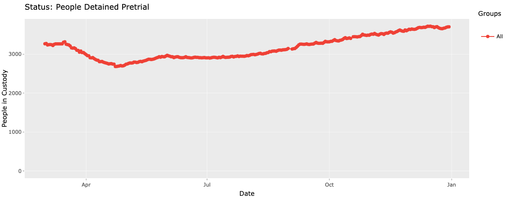

> COVID in NYC Jails
COVID in NYC Jails
The figures below were developed for a December 31 commentary in the New York Daily News, by Seth J. Prins, Sandhya Kajeepeta, Brad Maurer, and Kayla Simpson, about COVID-19 in New York City Jails. We argue that the city’s current response is far worse than its inadequate spring response, placing incarcerated people, their families, correctional staff, and the community at large at grave risk. The New York City jail population continues to increase daily, approaching pre-pandemic levels, and city officials are taking no action to reduce populations or implement a rigorous testing regime. Mass releases and mass testing are necessary as we face a second outbreak in New York City jails.
Figures prepared by Sandhya Kajeepeta
Figure 1. 7-day average new COVID cases in NYC overall and NYC total jail population over time

The NYC jail population is approaching pre-pandemic levels and is up nearly 1,000 people since the bail reform rollback took effect on July 2 (light blue line). This increase is taking place as NYC is facing a second wave of COVID cases (dark blue line).
(Sources: NYC Department of Health and Mental Hygiene & NYC Board of Correction COVID-19 Updates)
Figure 2. 7-day average new admissions to and releases from NYC jails over time

Since the bail reform rollback, new jail addmissions (orange line) have consistently outpaced releases (green line), resulting in higher jail populations.
(Source: NYC Open Data)
Figure 3. Incarcerated people designated as “Likely Exposed but Asymptomatic” and new COVID cases in NYC jails over time

The number of incarcerated people designated as “likely exposed but asymptomatic” (teal line") and the number of new COVID cases in NYC jails (purple line) have dramatically increased from mid-November to late December, suggesting a second COVID jail outbreak has already begun in NYC.
(Source: NYC Board of Correction COVID-19 Updates)
Figure 4. People Detained Pretrial
 The pretrial detention population in NYC jails is higher now than it was pre-pandemic: 3,268 people were detained pretrial on March 1 compared to 3,704 people on December 30.
(Source: Vera Institute of Justice JailViz 2.0)